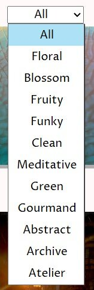
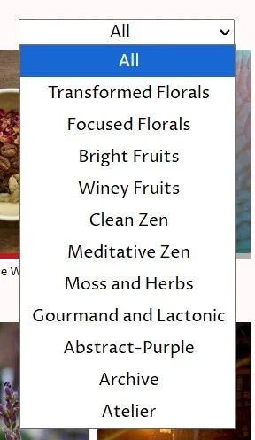

Developing an easy to use classification system for compositions, it has to be easy to understand, meaningful, and human-computer-interface friendly. The set words currently at use to group compositions at Qolom are: Floral,Blossom, Fruity, Funky, Clean, Meditative, Green, Gourmand, Abstract. Despite acknowledging the failure points, a slight use of linguistics can help transform words and languages into layers of meaning that help convey intent.
Unlike most posts, articles, or journal entries where we try to convey factual information; I believe linguistics is flexible enough to be used as a vehicle to help convey information using novel (albeit debatable) methods. The aim here is to explain why certain words were chosen and how Human Computer Interface (the study of how people interact with digital interfaces, HCI) were the limiting factor that pushed certain choices.
To help categorise and ease the filtering of olfactive experiences, compositions needed to be easy to group - whilst easy in theory it can be increasingly difficult as the lines blur between blends and implementations. For example, a green rose perfume - do we categorise it as a green or floral perfume? How do we want to portray this information without recursively listing an uneasy landscape of words and transitory dual-word categories. My approach was to select 4 words (floral, fruity, incense, and green) and then split them into halves to help describe the two ends of the potential scent spectrum.
Blossom is the botanical definition of the flower that grows from plants. A focus on the core characteristics, a rose will smell like a rose and champaca will smell like champaca.
Floral categories help capture the concept of utilising a flower when used in the context of other materials. A transformative take without loosing the core identity
Funky compositions take a fruity base and ages it, introducing a winey or jammy facet. These compositions won't be sweet but more darker, sour, or even pungent to represent how fruits can change overtime.
Funky compositions take a fruity base and ages it, introducing a winey or jammy facet. These compositions won't be sweet but more darker, sour, or even pungent to represent how fruits can change overtime.
Clean can mean two different things in the perfumery scene - ozonic or citrus-fresh. The concept chosen here is something grounded but refreshing - relatively simple compositions that do not sway you in any extremes.
Meditative profiles are usually incense driven and very grounding. When developing blends based around the concept of meditating, they have to invoke a sense of awakening and focus - this is the active meditative state.
Green is the colour of moss, the colour of herbs, and the colour of damp forest grounds. An encapsulation of the untamed growths of the Earth.
Gourmand is the literal category for food and drinks. These compositions are based on the memories or replication of how certain foodstuffs and beverages smell like.
Abstract, purple, synonymous. Elusive and mysterious blends.
HCI is a wonderful multidisciplinary study - it helps evaluate the effectiveness of an interface and how to improve it. Some high-end setups use eye-tracking software to measure how a person navigates an interface or computer display system as eluded by Amon Rapp [2023]. HCI can be used to make something more addictive, something easier to use, or something that allows navigation to align with exceptions. My personal useage of HCI trial and errors is to make an interface that is easy to view and allow intuitive navigation especially when compounded with a wide range of information (journal entries or perfumes).
This very specific limitation, the easy of navigation, was the reason why I chose certain words. Let's take a look at an example where filter list has single words with a shorter lengths vs many variable lengths of words:


The single world drop-down list is easier to view, with less words, we can interact with the options quicker and with slight more ease. Whilst the larger list provides more content, the larger count of characters provide a less sleeker view.
This, HCI, has nothing to do with linguistics but it does impact certain choices and usages of words.
Ultimately, the benefits of having chosen certain words to represent certain classes of olfaction utterly relies on one's understanding of these words. Between conflict in education, culture, and exposure - the choices of single words to represents whole identities is fickle and easily made ineffective and crass. For Qolom's personal branding, however, these words might provide structure in blending new compositions. As categories have already been set, conscious decisions are now made to skew these experiences into one mode or another - a perfect solution would be an infinite spectrum of words to describe all possible variations but to visually represent this would be unenjoyable to the user.